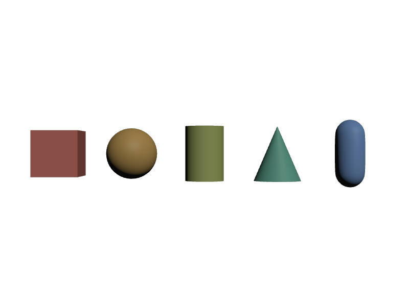

axisを書かずに縦の円柱を期待する
axisの既定は"Z"です。Y-upのシーンでは横に倒れて見えます。縦にしたいなら"Y"を明示します。
STEP 29 · GPRIM TYPES
Meshを組み立てなくても置ける形があります
今日これだけ
公式情報に基づく説明
STEP 27でMeshを3つの配列から組み立てました。しかし、箱や球を置きたいだけなら点と面を並べるのは大げさです。OpenUSDには、数値をいくつか書くだけで形が決まるGprimが用意されています。
これらをQuadric（二次曲面）や基本形状と呼びます。共通しているのは、pointsやfaceVertexIndicesを持たず、代わりにsizeやradiusといったその形に固有の数値を持つことです。描画するときにRendererが実際の形へ展開します。
| 型 | 固有のAttribute | 形 |
|---|---|---|
Cube | size | 一辺の長さで決まる立方体 |
Sphere | radius | 球 |
Cylinder | radius / height / axis | 円柱 |
Cone | radius / height / axis | 円錐 |
Capsule | radius / height / axis | 両端が半球の円柱 |
Plane | width / length / axis | 平面 |
axisは「どの軸を高さ方向にするか」で、"X"・"Y"・"Z"から選びます。既定は"Z"なので、Y-upのシーンで縦の円柱を置きたいならuniform token axis = "Y"を明示します。
USDA
def Cube "Box"
{
double size = 1
}
def Sphere "Ball"
{
double radius = 0.6
}
def Cylinder "Pipe"
{
uniform token axis = "Y"
double height = 1.2
double radius = 0.45
}
def Cone "Tip"
{
uniform token axis = "Y"
double height = 1.2
double radius = 0.55
}
def Capsule "Pill"
{
uniform token axis = "Y"
double height = 0.8
double radius = 0.35
}どれも波括弧の中に数値が2〜3行あるだけです。pointsもfaceVertexCountsもありません。uniformが付いたaxisは、STEP 28で見たとおり「時間で変化しない」という宣言です。
結果

Cube・Sphere・Cylinder・Cone・Capsule。すべてaxis = "Y"を指定して縦に立てています。examples/lesson-80/gprims.usda / ソースからビルドしたOpenUSD v26.08のusdrecord --disableCameraLight（Hydra Storm・Metal）/ macOS 26.5.2・Apple M4点で表す形
基本形状とMeshのほかに、点の並びそのものが形になるGprimが2つあります。
BasisCurvesは曲線です。pointsに制御点を並べ、curveVertexCountsで「1本の曲線が何点を使うか」を指定します。STEP 27のfaceVertexCountsとまったく同じ考え方で、こちらは面ではなく線を区切ります。typeがcubic（既定）かlinear、basisが曲線の種類（既定はbezier）、wrapが閉じるかどうかです。髪や草、ワイヤーに使います。
Pointsは点群です。pointsと、点ごとの大きさwidthsを持ちます。パーティクルや点群スキャンのデータに使います。idsを持てるので、STEP 114のPointInstancerと同じように個体を追跡できます。
def BasisCurves "Wire"
{
uniform token type = "linear"
uniform token wrap = "nonperiodic"
int[] curveVertexCounts = [4]
point3f[] points = [(0, 0, 0), (0.5, 1, 0), (1.5, 1, 0), (2, 0, 0)]
float[] widths = [0.05] (
interpolation = "constant"
)
}curveVertexCounts = [4]は「曲線1本、制御点4個」という意味です。[4, 3]と書けば2本になります。widthsにもPrimvarと同じinterpolationが使えて、constantなら全体で1つ、点ごとに変えたいならvertexにします。
Diagram
sizeやradiusだけで形になるpointsと、区切りや太さを持つpoints・faceVertexCounts・faceVertexIndicesの3配列Python
from pxr import Usd, UsdGeom
stage = Usd.Stage.CreateNew("g.usda")
common = {"doubleSided", "orientation", "primvars:displayColor",
"primvars:displayOpacity", "purpose", "visibility",
"extent", "proxyPrim", "xformOpOrder"}
for cls in (UsdGeom.Cube, UsdGeom.Sphere, UsdGeom.Cylinder,
UsdGeom.Cone, UsdGeom.Capsule, UsdGeom.Plane):
prim = cls.Define(stage, "/" + cls.__name__).GetPrim()
own = [a.GetName() for a in prim.GetAttributes()
if a.GetName() not in common and not a.GetName().startswith("xformOp")]
print("%-12s %s" % (prim.GetTypeName(), own))Cube ['size']
Sphere ['radius']
Cylinder ['axis', 'height', 'radius']
Cone ['axis', 'height', 'radius']
Capsule ['axis', 'height', 'radius']
Plane ['axis', 'length', 'width']除外したcommonのほうが、すべてのGprimに共通する部分です。purpose・visibility・extent・primvars:displayColorはどの形にもあります。共通の部分と、形ごとの部分という見方は、STEP 44のLightAPIとLight型の関係と同じです。
USDA → Python mapping
USDA
def Cube "Box" { double size = 1 }↓Python
UsdGeom.Cube.Define(stage, "/Box").CreateSizeAttr(1)USDA
double radius = 0.6↓Python
sphere.CreateRadiusAttr(0.6)USDA
uniform token axis = "Y"↓Python
cylinder.CreateAxisAttr(UsdGeom.Tokens.y)USDA
int[] curveVertexCounts = [4]↓Python
curves.CreateCurveVertexCountsAttr([4])USDA
float[] widths = [0.05]↓Python
curves.CreateWidthsAttr([0.05])Beginner notes
よくある間違い
axisの既定は"Z"です。Y-upのシーンでは横に倒れて見えます。縦にしたいなら"Y"を明示します。
sizeは一辺の長さです。size = 1の立方体は-0.5から0.5までを占めます。Sphereのradiusとは意味が違います。
heightは円柱部分の長さで、両端の半球は含みません。全長はheight + radius × 2になります。
Face数が実装しだいなので、期待どおりに対応しません。constantを使います。
基本形状でもextentは自動では入りません。STEP 28と同じで、必要ならComputeExtentFromPluginsで計算して書きます。
Glossary
sizeは一辺の長さ。heightは円柱部分だけの長さ。"Z"。curveVertexCountsで1本ごとの点数を区切る。widthsで持つ。interpolationが使える。Official references
確認日: